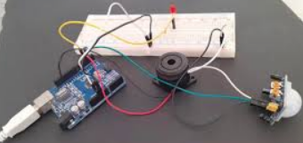

Presentación
Hola que tal, soy una persona a quien le gusta mucho la tecnología y hablar sobre comidas típicas. Este es mi portafolio personal donde conocerás un poco sobre mí, mis cualidades, habilidades y las cosas que más me gustan hacer en el día a día. Aquí encontrarás cómo puedes contactarme, información más personal y muchas cosas. Pásate por las diferentes secciones, como: sobre mí, habilidades, mis proyectos que he realizado y cómo puedes contactarme.
Sobre mí
Hola, me llamo Bryan. Soy estudiante de la UTB y actualmente me encuentro estudiando en la jornada matutina. Vivo en Babahoyo y me dedico un poco al desarrollo web, voy aprendiendo poco a poco. Me gusta ver películas, involucrarme en nuevos proyectos de tecnología, estar informado sobre innovaciones, además de disfrutar de la música y la cocina, especialmente en recetas de asados.
He realizado proyectos como páginas web con pequeños sistemas de base de datos para almacenar información de inicios de sesión de los clientes. También sé de ensamblaje de computadoras, he montado mi propio CPU para uso doméstico y académico. Asimismo, he hecho instalaciones de redes en una tienda, asegurando cobertura en todas las áreas. Estas son algunas de mis habilidades actuales, aunque sé que tengo mucho por aprender.
Habilidades y Competencias
- HTML5
- CSS3
- JavaScript
- Desarrollo de aplicaciones web
- Cocinero
- Práctico deporte
- Músico
- Conductor de drones
Lenguajes de programación
- Java
- PHP
- MySQL
- Wamp Server
Galería de Proyectos
Proyecto 1
Este proyecto fue un modelo base de un pequeño sistema automatizado de riego a una planta, hecho con Arduino y programado en C++. El sistema funciona automáticamente, activando una bomba de agua al detectar que la tierra está seca.

Proyecto 2
Este proyecto es un sensor de movimiento hecho con Arduino. Al detectar movimiento, puede activar una luz LED o alarma. Útil para seguridad o iluminación automática.
